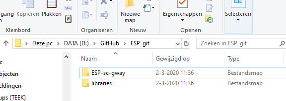
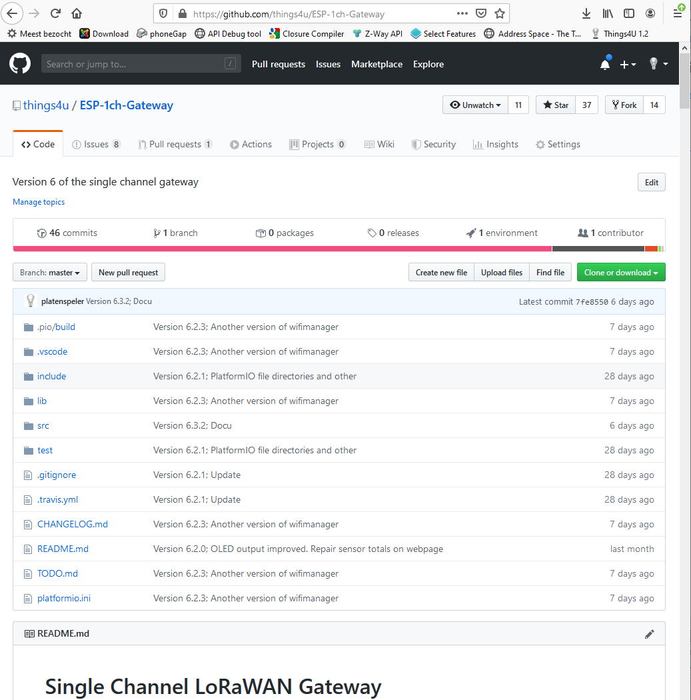
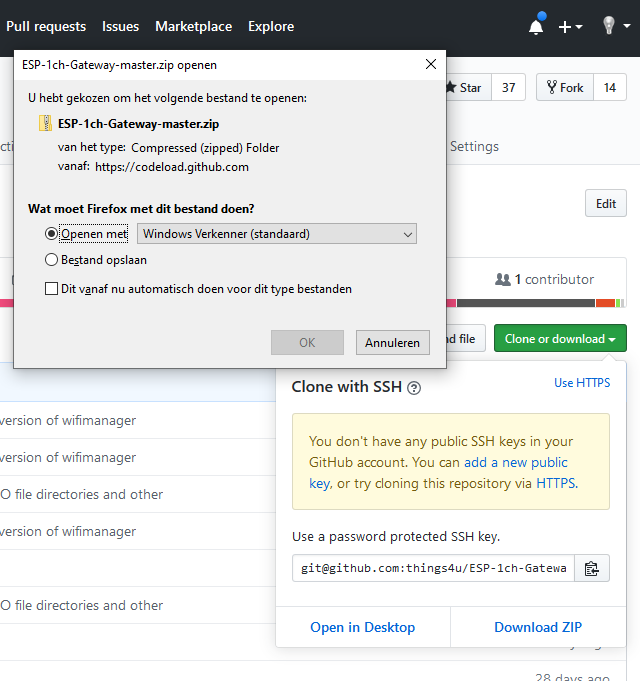

3.2 Ardino IDE configuration
This chapter describes the way to download the Gateway software from the gihub server and install it for the Ardion IDE environment.
You can push the pictures to enlarge them.
- Determine where to install the Arduino IDE sources and libraries for the 1-channel gateway. Make that directory and create two subdirectories in that directory:
- Goto https://github.com/things4u/ESP-1ch-Gateway
- Download the Gateway software, click <Clone or download> and than <Download ZIP> to download to your computer
- Unpack the "src" folder and copy it to the "ESP-sc-gway" folder
- Unpack the "lib" folder and copy it to the "libraries" folder
- Open the ESP-sc-gway.ino file in the Arduino IDE
- Set the libraries directory in the Arduino IDE. Select <File><Preferences> and set the libraries folder to the folder where you stored the obraries folder in. For example D:\GitHub\ESP_git\ (Remember you have to specify one folder "higher")
- Make the Arduino IDE builds the software and uploads to the device
Make a directory on your PC to store Gateway software
Make two directories in a folder on your PC where you want to store the Gateway software and its libraries

Download the Gateway Software from GIT
Go to GIT and select the sorage button.

Open the Gateway software as ZIP

{kind=link}